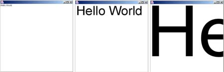
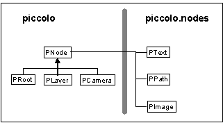
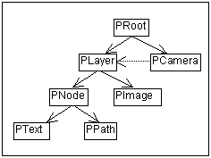

This work is based heavily on the work of R. Johnson in his seminal 1992 paper "Documenting Frameworks using Patterns" and the work of Douglas Kirk in his “Patterns for JHotDraw paper”. This work merely attempts to adapt the concepts presented there into a format suitable for our Piccolo framework.
Piccolo is a framework building zooming user interfaces. The elements of these interfaces can be scaled, react to user input, and be animated. The user viewpoint may be scaled and panned. Interfaces build with Piccolo can define your entire applications interface, or they can be a small part of a large system.

Figure 1 shows a sequence of frames from a simple zooming interface created using Piccolo. This example shows the fundamental aspects of a Piccolo application. In this sequence the user is zooming in on a "Hello world!" interface object.
The interface objects on the canvas are nodes (instances of PNode), in this case a PText node. Nodes are used represent the discrete components of an interface. The framework comes with some commonly required nodes (shapes, images, and text) and the developer has the opportunity to define new ones for their own interfaces.
Figure 1’s zooming interaction was created with the help of an event listener (instances of PInputEventListener). Event listeners define how the interface reacts to user input. In this zooming interaction the event listener reacted to mouse input by manipulating the camera node's view transform to create the zooming effect. Piccolo comes with ready-made event listeners for zooming and panning camera nodes, and dragging nodes on the canvas.
All Piccolo interfaces need to be placed in a PCanvas so that they may be viewed and interacted with by the user. The canvas is a subclass of JComponent so it may easily be integrated with Java Swing applications. In addition to hosting Piccolo in a Swing interface the canvas also maintains a camera and layer node. Scaling and translating the camera's view transform over time is how zooming and panning of the Piccolo interface is accomplished. New nodes are normally added to the canvas's layer node.
The interface depicted in figure 1 can be created with the following code:
import edu.umd.cs.piccolo.PCanvas;
import edu.umd.cs.piccolo.nodes.PText;
import edu.umd.cs.piccolox.PFrame;
// The PFrame class is a utility class that creates a new java window
// and adds a PCavnas to it. You can override the initialize method and
// start building your interface there.
public class PiccoloExample extends PFrame {
public void initialize() {
PNode aNode = new PText("Hello World!");
// Add the node to the canvas layer so that it
// will be displayed on the screen.
getCanvas().getLayer().addChild(aNode);
}
public static void main(String[] args) {
new PiccoloExample();
}
}
This creates the default zooming interface. A new text node is added to the surface, and event handlers for zooming and panning are automatically installed by the PCanvas.
The Piccolo usage patterns are designed to get you up and running with Piccolo as quickly as possible. They provide quick "cookbook" explanations of the major things that can be done with Piccolo. To gain a better understanding of the Piccolo implementation and of its runtime behavior is see Implementation Patterns for Piccolo.
To use Piccolo you will need to add the appropriate .jar files to your classpath, and to do that you need to know what each .jar file contains, and how to build the piccolo framework.
Piccolo comes with 4 .jar files:
If you downloaded the compiled distribution of piccolo these .jar files are located for you in piccolo/build/. If you didn't then you will need to build them yourself. This is done by typing 'build all' from within the piccolo/ folder.
Piccolo also comes with project files for the Eclipse IDE (www.eclipse.org), this is our favorite development environment for Piccolo, and Java in general.
There are an infinite variety of nodes that can be included in a zooming user interface. Thus, their needs to be a way to make new nodes for each application.
Each visual interface element in Piccolo is a subclass of PNode. Nodes can be used directly or customized by sub classing or composition.
The following code defines a new simple (without a border) ellipse node.
public class SimpleEllipseNode extends PNode {
private Ellipse2D ellipse;
// This nodes uses an internal Ellipse2D to define its shape.
public Ellipse2D getEllipse() {
if (ellipse == null) ellipse = new Ellipse2D.Double();
return ellipse;
}
// This method is important to override so that the geometry of
// the ellipse stays consistent with the bounds geometry.
public boolean setBounds(double x, double y, double width, double height) {
if(super.setBounds(x, y, width, height)) {
ellipse.setFrame(x, y, width, height);
return true;
}
return false;
}
// Non rectangular subclasses need to override this method so
// that they will be picked correctly and will receive the
// correct mouse events.
public boolean intersects(Rectangle2D aBounds) {
return getEllipse().intersects(aBounds);
}
// Nodes that override the visual representation of their super
// class need to override a paint method.
public void paint(PPaintContext aPaintContext) {
Graphics2D g2 = aPaintContext.getGraphics();
g2.setPaint(getPaint());
g2.fill(getEllipse());
}
}
Event listeners represent the modes of interaction between the user and the interface. Piccolo comes with event listeners that let the user zoom and pan their viewpoint, and drag nodes in the interface. An important part of designing an interface using Piccolo is to design the set of event listeners that will define the user experience.
Once created an event listener must be registered with a node so that it can receive events. Many event handlers register with the camera node so that they get all events that come from the canvas associated with that camera.
This example class creates an event listener that will create rectangle nodes on the canvas's layer when the user presses, drags, and then releases the mouse.
// This event listener works by keeping track of the mouse press
// location and the current mouse drag location. It then sizes the new
// rectangle around those points. Note: The implementation of this event
// handler could be simplified by sub classing PDragSequenceEventHandler.
public class RectangleCreationEventHandler extends PBasicInputEventHandler {
// The rectangle that is currently getting created.
protected PPath rectangle;
// The mouse press location for the current pressed, drag, release sequence.
protected Point2D pressPoint;
// The current drag location.
protected Point2D dragPoint;
public void mousePressed(PInputEvent e) {
super.mousePressed(e);
PLayer layer = e.getCanvas().getLayer();
// Initialize the locations.
pressPoint = e.getPosition();
dragPoint = pressPoint;
// create a new rectangle and add it to the canvas layer so that
// we can see it.
rectangle = new PPath();
rectangle.setStroke(new BasicStroke((float)(1/ e.getCamera().getViewScale())));
layer.addChild(rectangle);
// update the rectangle shape.
updateRectangle();
}
public void mouseDragged(PInputEvent e) {
super.mouseDragged(e);
// update the drag point location.
dragPoint = e.getPosition();
// update the rectangle shape.
updateRectangle();
}
public void mouseReleased(PInputEvent e) {
super.mouseReleased(e);
// update the rectangle shape.
updateRectangle();
rectangle = null;
}
public void updateRectangle() {
// create a new bounds that contains both the press and current
// drag point.
PBounds b = new PBounds();
b.add(pressPoint);
b.add(dragPoint);
// Set the rectangles bounds.
rectangle.setPathTo(b);
}
}
The code to register this event listener with the canvas would look like this:
getCanvas().addInputEventListener(new RectangleCreationEventHandler());
Note that this event handler reacts to the same events that the zoom and pan event handlers react to. If they are all active on the canvas at the same time undesired behavior would occur. A general problem when defining global event handlers is making sure that they do not conflict in this way. The class PInputEventFilter can help in this regard. Often you will want to remove the default pan and zoom event handlers associated with the PCanvas, this can be done as follows:
getCanvas().removeInputEventListener(getCanvas().getZoomEventHandler()); getCanvas().removeInputEventListener(getCanvas().getPanEventHandler());
Often an interface has constraints that must be maintained between a node and its children. For example a node may want to always make its children line up in a row or a node may wish to expand its base size to always fully contain the bounds of its children.
The PNode class does no automatic layout of its own, but it provides methods that subclasses can override to perform layout in the appropriate place during the layout process.. The following is a simple layout node that overrides and lays its children out in a horizontal row.
PNode layoutNode = new PNode() {
public void layoutChildren() {
double xOffset = 0;
double yOffset = 0;
Iterator i = getChildrenIterator();
while (i.hasNext()) {
PNode each = (PNode) i.next();
each.setOffset(xOffset - each.getX(), yOffset);
xOffset += each.getFullBoundsReference().getWidth();
}
}
};
This layout code will automatically be called when the bounds of the layout node
change, or when the fullBounds of any of the layout node's children change.
Event handlers let an interface react to a user. Actives are used to give the interface a life of its own through the use of animation and other "scheduled" behaviors.
Activities (subclasses of PActivity) control some time-dependent aspect of the Piccolo system, usually some part of a node. This behavior may be of fixed duration or may continue until some termination condition is met (or perhaps forever). Activities of fixed duration may be defined to consume a fixed amount of time, independent of the frame rate.
This method sets up a flash activity that flashes the given node's color from red to green for 5 seconds.
public void flashNode(final PNode aNode) {
PActivity flash = new PActivity(5000) {
boolean fRed = true;
protected void step(long time) {
super.step(time);
if (fRed) {
aNode.setPaint(Color.red);
} else {
aNode.setPaint(Color.green);
}
fRed = !fRed;
}
};
// Must schedule the activity with the root for it to run.
aNode.getRoot().addActivity(flash);
}
Activities are scheduled by the PRoot until they have completed. Note that for animation activities you can also use the convenience methods in PNode:
public PTransformActivity animateToPositionScaleRotation(double x, double y, double scale, double theta, long duration); public PTransformActivity animateToTransform(AffineTransform aDestination, long duration);
Each activity has a start time and a duration, that together determine when an activity starts stepping and how long it continues to step. The PActivity.startAfter() method may be used to sequence an activity so that it starts right after another has stopped.
SWT is a new Java toolkit (similar to and replacing Swing) that comes out of the Eclipse IDE project. Piccolo was originally designed to work with swing, but now has preliminary SWT support as well. You will most likely use SWT if you are writing Piccolo extensions to the Eclipse IDE. See www.eclipse.org for more info on the Eclipse project.
Again SWT support is not complete. We are interested in your feedback and hope it is of use, but we can not promise future updates. SWT support is provided in the extras package in edu.umd.cs.piccolox.swt, and you will find SWT examples in the examples package. Here is the code for SWT hello world:
public class SWTHelloWorld {
public SWTHelloWorld() {
super();
}
public static void main(String[] args) {
Display display = new Display ();
Shell shell = open(display);
while (!shell.isDisposed()) {
if (!display.readAndDispatch()) display.sleep();
}
display.dispose();
}
public static Shell open(Display display) {
final Shell shell = new Shell(display);
shell.setLayout(new FillLayout());
PSWTCanvas canvas = new PSWTCanvas(shell,0);
PSWTText text = new PSWTText("Hello World");
canvas.getLayer().addChild(text);
shell.open();
return shell;
}
}
The Piccolo implementation patterns are designed to give a general understanding of how Piccolo is implemented and what its runtime behaviors are. This is opposed to the patterns in Usage Patterns For Piccolo that are designed to get you using the framework as quickly as possible.
You should be familiar with the basic concepts of the Piccolo framework design and how they relate to each other to effectively use Piccolo.
Piccolo is a direct-manipulation graphics framework that supports constructing zooming interfaces. The framework's design borrows heavily from the designs of both the Jazz and Morphic interface frameworks.

Piccolo Class Hierarchy
There are four main classes that define the framework's core:

Piccolo Runtime Structure
At runtime these classes form a tree like structure with the PRoot situated at the top. Each PCamera is normally linked with at least one PLayer that it looks at through it's view transform. If a camera is associated with a PCanvas then that cameras view is displayed on the canvas, and input events from the canvas enter the Piccolo scene graph at that camera's point in the hierarchy.
Nodes are the central design concept in Piccolo. Any object that wants to paint itself on the screen should inherit from the node class. In addition to painting on the screen all nodes may have other "child" nodes added to them. Visual structures are build up by grouping and sub grouping collections of nodes.
Each node also has its own AffineTransform that is applied before the node is drawn to the screen. This transform can be modified to scale and translate the node. This transform exits directly above the node, but below the nodes parent. I.E. translating it will translate the node (and all its descendents) but will not translate the node's parent.
Cameras are are nodes that have an additional transform (viewTransform) and a collection of layers in addition to the collection of children that they inherit from PNode. The view transform is applied before drawing or picking the layers, but not when drawing or picking the camera's children. Cameras may (an internal camera might not) also reference a PCanvas, and forward repaint events to that canvas. The canvas would then later ask the camera to draw the damaged region on its surface.
Layer nodes are nodes that can be viewed by a one or more cameras. They maintain a list of the cameras that are viewing them, and notify these cameras when they are repainted.
The PRoot serves as the topmost node in the Piccolo runtime structure; all other nodes are its direct children or descendents of its children. The PCanvas communicates with the root node to manage screen updates and to dispatch events to its children.
The PCanvas is a JComponent that is used to view a Piccolo scene graph in a Swing application. The PCanvas views the scene graph through a PCamera. It forwards swing input events to that camera, and uses that camera to draw itself. Translating and scaling that camera's view transform is how panning and zooming are accomplished.
Many of PNode's methods work on the composite structure (the node plus all its descendents) of the node. It is helpful to be able to easily distinguish these methods from ones that only work directly on the node and not on its children.
Piccolo uses the terms "full" to help distinguish between methods that work on a single node and those that work on a node together with all of its descendants. For example:
// Returns the bounding box of the given node. aNode.getBounds(); // Returns the bounds of the given node combined with the bounds of // all of the descendants of that node. Descendants need not be contained // in the bounds of their parent, so this full bounds value may be // larger then the bounds, but it will never be smaller. aNode.getFullBounds(); // This will paint just "aNode" and not any of its children. Normally this // method is automatically called from the fullPaint method. aNode.paint(aPaintContext); // This will paint "aNode" together will all of that node's descendents. aNode.fullPaint(aPaintContext);
Subclasses should generally not override the "full" methods, since they are implemented in terms of other methods that can be overridden.
Each node in Piccolo has its own transform and uses that to define its own coordinate system. It is essential that you understand coordinate systems, and how to convert from one coordinate system to another when designing a zooming user interface.
There may be thousands of different coordinate systems in a Piccolo interface (a different one for each node), but they can all be organized into three categories:
Piccolo provides methods that let you easily convert between different coordinate systems. The PNode class defines the methods:
Here is a typical example of how coordinate systems are used:
// This method connects the centers of two
// rectangle nodes with a line node. If you know that two nodes
// exist in the same coordinate system then you don't need to make
// all these conversions. This example assumes the most general case where
// they all exist in different coordinate systems.
public void connectRectsWithLine(PPath rect1, PPath rect2, PPath line) {
// First get the center of each rectangle in the
// local coordinate system of each rectangle.
Point2D r1c = rect1.getBounds().getCenter2D();
Point2D r2c = rect2.getBounds().getCenter2D();
// Next convert that center point for each rectangle
// into global coordinate system.
rect1.localToGlobal(r1c);
rect2.localToGlobal(r2c);
// Now that the centers are in global coordinates they
// can be converted into the local coordinate system
// of the line node.
line.globalToLocal(r1c);
line.globalToLocal(r2c);
// Finish by setting the endpoints of the line to
// the center points of the rectangles, now that those
// center points are in the local coordinate system of the line.
line.setPathTo(new Line2D.Double(r1c, r2c));
}
The root node's UI Cycle is at the center of Piccolo's runtime behavior where it drives the processes for processing user input, activities, bounds management, and scheduling repaints.
The PRoot class is responsible for running the UI Cycle. During each cycle it performs four actions:
The Piccolo UI loop is always driven from the Java event dispatch thread. A UI cycle is done for each new input event received by the canvas, and for each time the activity timer fires (to support animation).
Piccolo is not thread safe and should only be used by a single thread at a time, and that thread will almost always be the event dispatch thread.
If you need to run a computation in another thread you should use the methods SwingUtilities.invokeLater() or SwingUtilities.invokeAndWait() to connect the results of your computation back up to the event dispatch thread. The Java Swing toolkit has a similar policy, read Threads and Swing to learn more about these issues.
Event dispatch is the process through which Piccolo directs new events coming from the user to event handlers in the interface.
All event dispatch is managed by the input manager (PInputManager). Events get to the dispatch manager by first coming off the java event queue, next they are sent by java to the canvas (PCanvas) and the canvas forwards them to the input manager.
Once there the input manger converts the event from a java.awt.InputEvent into a PInputEvent. Next the input manager then sends the incoming event to the event listeners of the appropriate nodes. The dispatch manager maintains the following focus nodes:
Events are dispatched up the PPickPath associated with a given focus node, so they percolate up the pick path until they are consumed or they reach the originating camera node.
TIP: You can always get a reference to the dispatch manager from a PInputEvent, and ask it for the current focus nodes.
All scheduled activities are given a chance to run during the UI Cycle.
Activities are used to control some time dependent aspect of the Piccolo framework, for example they can be used to animate a node across the screen, or animate the camera's view transform to perform a zoom.
When the geometry of a node changes its bounds caches need to be recomputed and the geometry of other related nodes may also be effected.
Maintaining bounds caches and updating layouts can become very expensive when manipulating a large number of nodes. Because of this Piccolo uses a two stage incremental approach the layout management. The two stages consist of; a damage stage where damage is recorded in bit flags for each damaged node, and an incremental repair stage where the damage is repaired as is needed.
The damage stage begins when some node geometry changes. When this happens the type of damage that occurred is recorded for each node. The are three kinds of damage that can occur:
Damage is repaired by PNode's validateFullBounds method at the end of the UI cycle. That method does the following things
Piccolo should paint the screen only when needed, and it should be smart about only painting the portions of the screen that need to be painted.
Display update in Piccolo is driven from the UI Cycle, and uses the same damage/repair design that Piccolo uses to validate bounds. When a node changes such that it needs to be repainted it invalidates its paint, and invalidates the child paint of all its ancestors. Later (at the end of the UI Cycle) screen damage is collected for all nodes with invalid paint.
This section contains a few basic patterns the occur frequently in ZUI interfaces, and describes how they can be implemented with Piccolo. To learn more about using the Piccolo see Usage Patterns For Piccolo, and to learn more about the Piccolo implementation see Implementation Patterns for Piccolo.
It is useful for an object to change its visual representation based on the scale that it is being viewed at. For example when a document is viewed from far away (at a small scale) in a ZUI it might be best to just show that documents title, but when the view is zoomed in all the documents content should become visible.
To do semantic zooming in Piccolo you should override the appropriate paint method, and then choose how the node renders itself based on the scale stored in the paint context parameter. This example creates a new node that will paint its based bounds filed with a blue color when viewed at a scale that is less then one, and with an orange color when the scale is greater then one.
public class SemanticNode extends PNode {
public void paint(PPaintContext aPaintContext) {
double s = aPaintContext.getScale();
Graphics2D g2 = aPaintContext.getGraphics();
if (s < 1) {
g2.setPaint(Color.blue);
} else {
g2.setPaint(Color.orange);
}
g2.fill(getBoundsReference());
}
}
It is useful for an object to "stick" to a camera, so that its position does not change even when the camera is is zoomed and panned.
To do this in Piccolo you should add the "sticky node" as a child of the camera. The camera's view transform is only applied to the layer nodes that it is viewing, not to its children. The children are drawn after (on top of) the layer nodes.